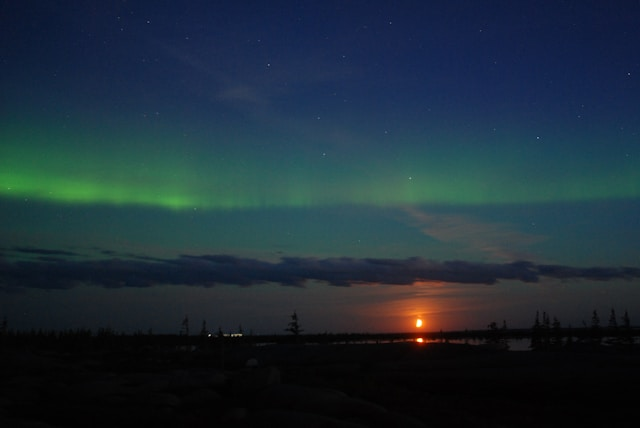

Explore the Wonders of Churchill
Churchill, located on the shores of Hudson Bay in Manitoba, is a remote yet enchanting destination that offers an unparalleled glimpse into the wild beauty of the Canadian North. Known as the "Polar Bear Capital of the World," Churchill attracts visitors from all over the globe to witness its wildlife, culture, and natural landscapes.
From November to March, Churchill becomes a prime location for viewing the Northern Lights (Aurora Borealis). Its clear, dark skies provide the perfect backdrop for one of nature's most stunning light shows.
Polar Bears and Wildlife
Churchill is famous for its polar bears, which migrate through the region as they travel toward the Hudson Bay. Visitors can embark on unique tours in specialized tundra vehicles to safely observe these magnificent creatures in their natural habitat.
Northern Lights in Churchill
During the winter months, Churchill offers some of the best views of the Northern Lights. Tourists can enjoy guided tours, which include photography workshops, aurora viewing platforms, and cozy accommodations under the dancing lights.

Adventure Awaits in Churchill
- Polar Bear Viewing Tours
- Beluga Whale Watching
- Dog Sledding Adventures
- Historical Fort Prince of Wales Tours
- Kayaking and Canoeing in Hudson Bay